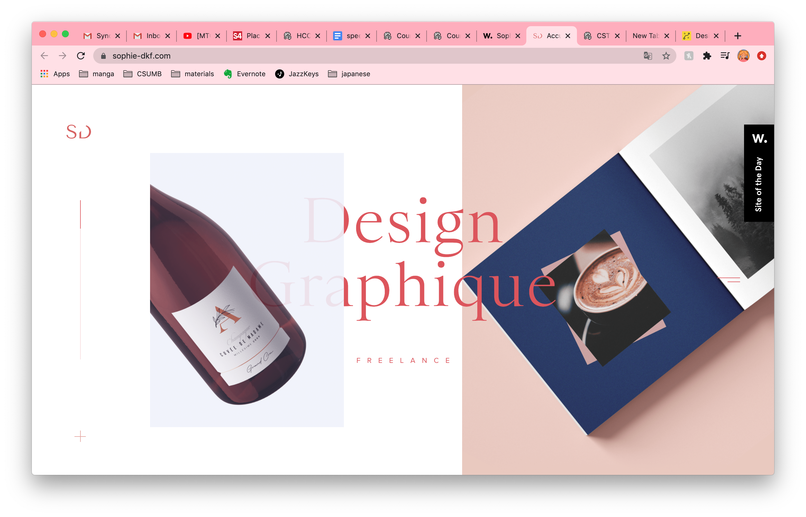

In this lab, we had to replicate a website by only using HTML and CSS coding.
This lab was not the not easy, yet not the most challenging. I only struggled positioning elements on the page, especially since it was in a resizable frame.
What you are seeing is an index.html styled with the index.css that I wrote the code for.
Below is the origional website.
